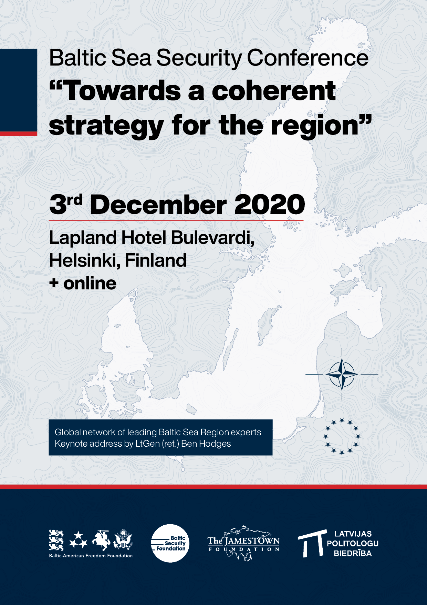

By BSF Team in Conferences | November 3, 2020
Baltic Sea Security Conference to deal with fragmented security approaches
Baltic Sea Security Conference will take place on December 3rd in Helsinki, Finland as well as online.
The conference concludes the Baltic Sea Security Initiative, involving workshops, lectures and seminars on the regional aspects of military, societal, economic and cyber security. The initiative joined 150 participants, including Baltic experts from Europe, United States and Japan.
The experts of the initiative will share their conclusions with top-level guest speakers from public and private sectors over several panel discussions. Lieutenant General (Retired) Ben Hodges will deliver the closing keynote address.
The event is organized by the Baltic Security Foundation, The Jamestown Foundation, Latvian Political Science Association and The Baltic-American Freedom Foundation. For more information, please visit the website <www.balticsecurity.eu> or write us to the following address: <info@balticsecurity.eu>.
Prepared by the Baltic Security Foundation
Register here
Conference Program PDF
09:00 - 09:45 Registration
09:45 - 10:00 Opening remarks
- Mr. Olevs Nikers (President, BSF)
- Mr. Glen Howard (President, The Jamestown Foundation, USA)
- Mr. Esa Pulkkinen (Director General, Department of Defence Policy, Ministry of Defence, Finland)
10:00 - 10:30 Opening keynote
- Mr. Glen Grant (BSF, Latvia)
10:30 - 11:30 Panel on defense
- Mr. Michal Jarocki (MilMag, Poland) – moderator
- Mr. Jorgen Elfving (Sweden) Dr. Zdzislaw Sliwa (Baltic Defense College)
- Ms. Aleksandra M. Friede (Universität der Bundeswehr Hamburg, Germany)
- Col. Petteri Kajanmaa (National Defence University, Finland)
- Dr. Jan Sjolin (Sweden)
11:30 - 11:45 Break
11:45 - 12:45 Panel on cyber security
- Mr. Otto Tabuns (BSF) – moderator
- Ms. Līga Rozentāle (Microsoft)
- Mr. Andreis Purim (BSF)
- Ms. Peter Emoke (European Commission)
- Mr. Shota Gvineria (Georgia)
12:45 - 13:45 Break
13:45 - 14:45 Panel on economic security
- Dr. Didzis Kļaviņš (University of Latvia) – moderator
- Dr. Sigita Kavaliunaite (Ministry of Foreign Affairs, Lithuania)
- Mr. Roger Robinson (RWR Advisory, USA)
- Mr. Aivar Jaeski (Estonia)
- Mr. Marius Laurinavičius (Vilnius Institute for Policy Analysis)
14:45 - 15:00 Break
15:00 - 16:00 Panel on societal Security
- Ms. Maia Otarashvili (FPRI, USA) – moderator
- Dr. Viktorija Rusinaite (Hybrid Center of Excellence)
- Mr. Erling Johannson (Sweden)
- Ms. Anne-Ly Reimaa (Ministry of Culture, Estonia)
- Dr. Aleksandra Kuczyńska-Zonik (Institute of Central Europe, Poland)
- Dr. Søren Dosenrode (Aalborg University, Denmark)
16:00 - 16:30 Closing keynote: Fragmented security approaches in the Baltic Sea region: challenges for the Transatlantic community
- Ltg (Ret) Ben Hodges (Center for European Policy Analysis)
16:30 - 16:45 Closing remarks
Full poster:
